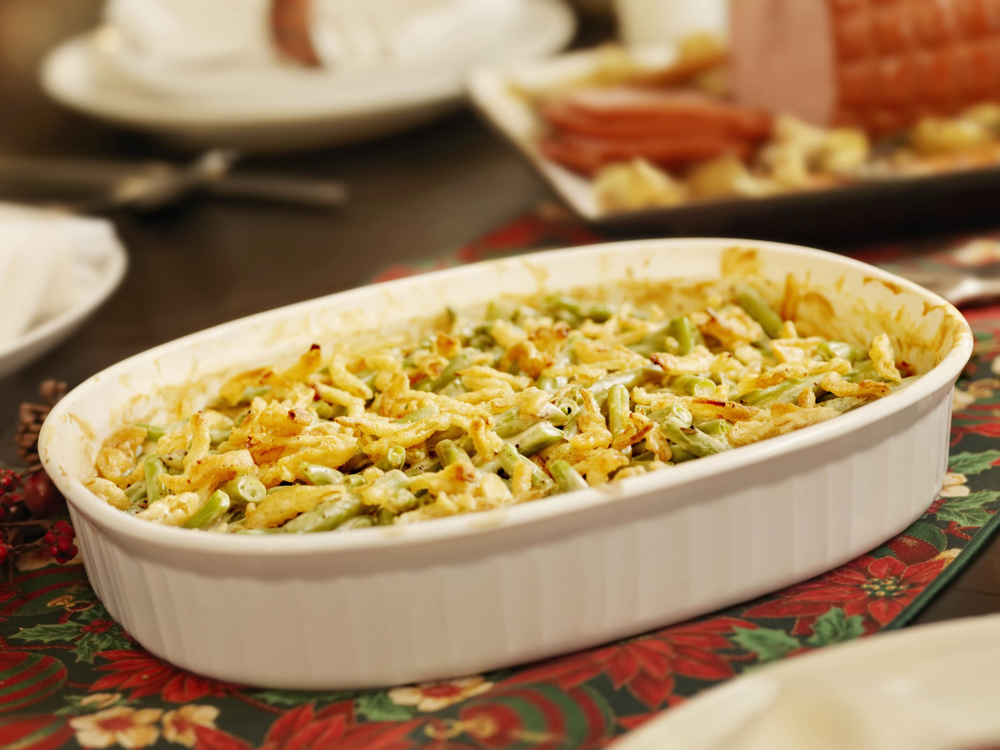

Recipe for Classic Casserole

Description
A casserole is a kind of large, deep pan or bowl used for cooking a variety of dishes in the oven; it is also a
category of foods cooked in such a vessel. To distinguish the two uses, the pan can be called a "casserole dish"
or "casserole pan", whereas the food is simply "a casserole". The same pan is often used both for cooking and
for serving.
Ingredients
- 1 cancondensed cream of mushroom soup
- 2 cansgreen beans
- 1 1/3 cupsfrench fried onions
- 3/4 cupmilk
- 1/4 tsp.ground black pepper
Steps
- In a medium sized mixing bowl, add the Mushroom soup, milk, black pepper, green beans, 2/3 cup of fried
onions and stir the mixture well
- Pour the mixture into 1 1/2 quart casserole pan and bake at 350ºF for 25 mins.
- Stir the mixture and sprinkle the remaining onions on top and bake for another 5 mins or until the onions on
top are golden brown